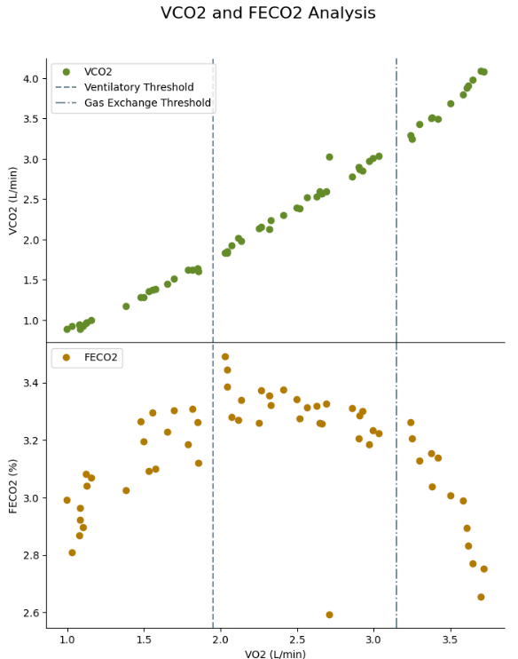

Python Graphing
This plot, created using Python, visualizes V̇CO2 and FECO2 over V̇O2, providing valuable insights into thresholds and exercise intensities. The plots were developed from a template code, which was customized to include subplots and thresholds. Click "Learn More" to view my code on GitHub.
Learn more